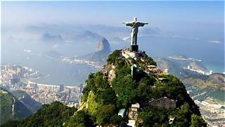

Nombre: Cristo Redentor
País: Brasil (Río de Janeiro)
Año de construcción: 1922 - 1931
El Cristo Redentor fue construido para representar la paz y el cristianismo. La obra fue diseñada por el ingeniero brasileño Heitor da Silva Costa y el escultor francés Paul Landowski. Se encuentra en la cima del cerro Corcovado y es uno de los monumentos más visitados de América.
Cada año millones de turistas visitan el Cristo Redentor. Durante la noche suele iluminarse con diferentes colores para conmemorar fechas importantes o campañas mundiales.
Siguiente Maravilla →